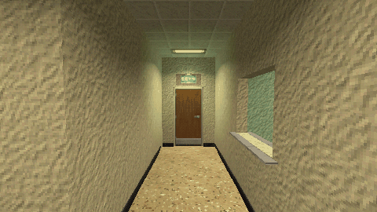

Tutorials › Make Doors Open Away from the Player
How to Make Doors Open Away from the Player in Godot 4
A door that swings away from the player, from either side.

A door that swings open away from whoever comes near, from either side. It opens at the same distance from both sides, measured from the doorway's middle, and if the player turns back as it closes, it swings back through the frame out of their way.
Script: door_open_away.gd (MIT) · Godot 4.3 or newer · its folder on GitHub
How to use it
- Give the door scene a child named
Hingeat the leaf's edge in the doorway, an AnimatableBody3D, and put the leaf's mesh and collision under it: its collision then swings with it and pushes bodies aside. - Add
door_open_away.gdto the door's Node3D.open_degreesis the side it opens to by itself,open_distanceis measured from the doorway's middle. - Put the player in the group
player.
What it needs
- A door scene built that way; nothing else.
Try it free
The Liminal PSX Office Kit - Free Sampler has a wooden office door and a doorway wall to try it on (its own door.gd does the same with more options).
How it was tested
In Godot 4.3 and 4.7.2, on the free sampler's door: walking and running through it from both sides, and turning back 0 to 0.3 s after it starts to close; each time it opens away from the runner and the leaf never touches them.
The code
extends Node3D
## How to Make Doors Open Away from the Player in Godot 4
## Cordatix Godot 4 PSX tutorials, MIT licensed: https://github.com/GoldenSparrow-Dev/cordatix-godot-psx-tutorials
## The devlog: https://cordatix.itch.io/liminal-psx-office-kit/devlog/1723528/how-to-make-doors-open-away-from-the-player-in-godot-4-liminal-psx-office-kit-11
## A door that swings open away from whoever comes near, a cut-down version of the Liminal PSX Office Kit 1.1's
## door.gd. The scene: this script on the door's Node3D, a "Hinge" child (an AnimatableBody3D, so its collision
## swings too) at the leaf's edge in the doorway, and the leaf's mesh and collision under the Hinge.
@export var open_degrees := -95.0 # the side the door opens to by itself
@export var speed_deg := 240.0
@export var open_distance := 3.5 # from the doorway's middle
var is_open := false
var _angle := 0.0
var _swing := 0.0
@onready var _hinge: Node3D = $Hinge
func _physics_process(delta: float) -> void:
var player := _nearest_player()
if player != null and not is_open:
_swing_away_from(player) # each time the door starts to open
is_open = player != null
var target := _swing if is_open else 0.0
_angle = move_toward(_angle, target, speed_deg * delta)
_hinge.rotation_degrees.y = _angle
func _swing_away_from(player: Node3D) -> void:
# the leaf runs from its hinge towards the door's middle, so at open_degrees it swings to this side
var leaf_side := signf(_hinge.position.x * sin(deg_to_rad(open_degrees)))
# and the player is on this side of the doorway, in the door's own frame
var player_side := signf(to_local(player.global_position).z - _hinge.position.z)
var away := -open_degrees if player_side == leaf_side else open_degrees
# still on the player's side as they come back: back through the frame to the far side,
# unless the leaf is more than 60 degrees open; then it finishes there, nearly out of their way
if absf(_angle) > 60.0 and signf(_angle) != signf(away):
return
_swing = away
func _nearest_player() -> Node3D:
# measured from the doorway's middle, so the door opens at the same distance from both sides
var doorway := to_global(Vector3(0.0, 0.0, _hinge.position.z))
var best: Node3D = null
var best_d := open_distance
for body in get_tree().get_nodes_in_group("player"):
if body is Node3D:
var d := (body as Node3D).global_position.distance_to(doorway)
if d < best_d:
best_d = d
best = body
return best
The devlog and the pack
The step-by-step walkthrough is the devlog How to Make Doors Open Away from the Player in Godot 4 (Liminal PSX Office Kit) on itch.io, written for Liminal PSX Office Kit, a PS1-style asset pack by Cordatix for Godot 4, Unity, Unreal and Blender.